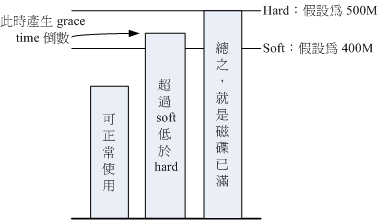

Quota 这个玩意儿就字面上的意思来看，就是有多少『限额』的意思啦！如果是用在零用钱上面，
就是类似『有多少零用钱一个月』的意思之类的。如果是在计算机主机的磁碟使用量上呢？以
Linux 来说，就是有多少容量限制的意思罗。我们可以使用 quota 来让磁碟的容量使用较为公平，
底下我们会介绍什么是 quota ，然后以一个完整的范例来介绍 quota 的实作喔！
 什么是 Quota
什么是 Quota
在 Linux 系统中，由於是多人多工的环境，所以会有多人共同使用一个磁盘空间的情况发生，
如果其中有少数几个使用者大量的占掉了磁盘空间的话，那势必压缩其他使用者的使用权力！
因此管理员应该适当的限制硬盘的容量给使用者，以妥善的分配系统资源！避免有人抗议呀！
举例来说，我们使用者的默认家目录都是在 /home 底下，如果 /home 是个独立的 partition ，
假设这个分割槽有 10G 好了，而 /home 底下共有 30 个帐号，也就是说，每个使用者平均应该会有 333MB 的空间才对。
偏偏有个使用者在他的家目录底下塞了好多只影片，占掉了 8GB 的空间，想想看，是否造成其他正常使用者的不便呢？
如果想要让磁碟的容量公平的分配，这个时候就得要靠 quota 的帮忙罗！
quota 比较常使用的几个情况是：
- 针对 WWW server ，例如：每个人的网页空间的容量限制！
- 针对 mail server，例如：每个人的邮件空间限制。
- 针对 file server，例如：每个人最大的可用网络磁盘空间 (教学环境中最常见！)
上头讲的是针对网络服务的设计，如果是针对 Linux 系统主机上面的配置那么使用的方向有底下这一些：
- 限制某一群组所能使用的最大磁碟配额 (使用群组限制)：
你可以将你的主机上的使用者分门别类，有点像是目前很流行的付费与免付费会员制的情况，
你比较喜好的那一群的使用配额就可以给高一些！呵呵！ ^_^...
- 限制某一使用者的最大磁碟配额 (使用使用者限制)：
在限制了群组之后，你也可以再继续针对个人来进行限制，使得同一群组之下还可以有更公平的分配！
- 以 Link 的方式，来使邮件可以作为限制的配额 (更改 /var/spool/mail
这个路径)：
如果是分为付费与免付费会员的『邮件主机系统』，是否需要重新再规划一个硬盘呢？
也不需要啦！直接使用 Link 的方式指向 /home (或者其他已经做好的 quota 磁碟) 就可以啦！
这通常是用在原本磁盘分区的规划不好，但是却又不想要更动原有主机架构的情况中啊！
大概有这些实际的用途啦！
虽然 quota 很好用，但是使用上还是有些限制要先了解的：
- 仅能针对整个 filesystem：
quota 实际在运行的时候，是针对『整个 filesystem』进行限制的，
例如：如果你的 /dev/sda5 是挂载在 /home 底下，那么在 /home 底下的所有目录都会受到限制！
- 核心必须支持 quota ：
Linux 核心必须有支持 quota 这个功能才行：如果你是使用 CentOS 5.x 的默认核心，
嘿嘿！那恭喜你了，你的系统已经默认有支持 quota 这个功能罗！如果你是自行编译核心的，
那么请特别留意你是否已经『真的』开启了 quota 这个功能？否则底下的功夫将全部都视为『白工』。
- Quota 的记录档：
目前新版的 Linux distributions 使用的是 Kernel 2.6.xx 的核心版本，这个核心版本支持新的 quota
模块，使用的默认文件 (aquota.user, aquota.group )将不同於旧版本的 quota.user, quota.group ！
(多了一个 a 呦！) 而由旧版本的 quota 可以藉由 convertquota 这个程序来转换呢！
- 只对一般身份使用者有效：
这就有趣了！并不是所有在 Linux 上面的帐号都可以配置 quota 呢，例如 root 就不能配置 quota ，
因为整个系统所有的数据几乎都是他的啊！ ^_^
所以罗，你不能针对『某个目录』来进行 Quota 的设计，但你可以针对『某个文件系统 (filesystem) 』来配置。
如果不明白目录与挂载点还有文件系统的关系，请回到第八章去瞧瞧再回来！
quota 这玩意儿针对整个 filesystem 的限制项目主要分为底下几个部分：
- 容量限制或文件数量限制 (block 或 inode)：
我们在第八章谈到文件系统中，说到文件系统主要规划为存放属性的
inode 与实际文件数据的 block 区块，Quota 既然是管理文件系统，所以当然也可以管理 inode 或 block 罗！
这两个管理的功能为：
- 限制 inode 用量：可以管理使用者可以创建的『文件数量』；
- 限制 block 用量：管理使用者磁碟容量的限制，较常见为这种方式。
- 柔性劝导与硬性规定 (soft/hard)：
既然是规范，当然就有限制值。不管是 inode/block ，限制值都有两个，分别是 soft 与 hard。
通常 hard 限制值要比 soft 还要高。举例来说，若限制项目为 block ，可以限制 hard 为 500MBytes 而 soft
为 400MBytes。这两个限值的意义为：
- hard：表示使用者的用量绝对不会超过这个限制值，以上面的配置为例，
使用者所能使用的磁碟容量绝对不会超过 500Mbytes ，若超过这个值则系统会锁住该用户的磁碟使用权；
- soft：表示使用者在低於 soft 限值时 (此例中为 400Mbytes)，可以正常使用磁碟，但若超过 soft
且低於 hard 的限值 (介於 400~500Mbytes 之间时)，每次使用者登陆系统时，系统会主动发出磁碟即将爆满的警告信息，
且会给予一个宽限时间 (grace time)。不过，若使用者在宽限时间倒数期间就将容量再次降低於 soft 限值之下，
则宽限时间会停止。
- 会倒数计时的宽限时间 (grace time)：
刚刚上面就谈到宽限时间了！这个宽限时间只有在使用者的磁碟用量介於 soft 到 hard 之间时，才会出现且会倒数的一个咚咚！
由於达到 hard 限值时，使用者的磁碟使用权可能会被锁住。为了担心使用者没有注意到这个磁碟配额的问题，
因此设计了 soft 。当你的磁碟用量即将到达 hard 且超过 soft 时，系统会给予警告，但也会给一段时间让使用者自行管理磁碟。
一般默认的宽限时间为七天，如果七天内你都不进行任何磁碟管理，那么 soft
限制值会即刻取代 hard 限值来作为 quota 的限制。
以上面配置的例子来说，假设你的容量高达 450MBytes 了，那七天的宽限时间就会开始倒数，
若七天内你都不进行任何删除文件的动作来替你的磁碟用量瘦身，
那么七天后你的磁碟最大用量将变成 400MBytes (那个 soft
的限制值)，此时你的磁碟使用权就会被锁住而无法新增文件了。
整个 soft, hard, grace time 的相关性我们可以用底下的图示来说明：

图 1.1.1、soft, hard, grace time 的相关性
图中的长条图为使用者的磁碟容量，soft/hard 分别是限制值。只要小於 400M 就一切 OK ，
若高於 soft 就出现 grace time 并倒数且等待使用者自行处理，若到达 hard 的限制值，
那我们就搬张小板凳等著看好戏啦！嘿嘿！^_^！这样图示有清楚一点了吗？
一个 Quota 实作范例
坐而言不如起而行啊，所以这里我们使用一个范例来设计一下如何处理 Quota 的配置流程。
- 目的与帐号：现在我想要让我的专题生五个为一组，这五个人的帐号分别是 myquota1, myquota2,
myquota3, myquota4, myquota5，这五个用户的口令都是 password ，且这五个用户所属的初始群组都是 myquotagrp 。
其他的帐号属性则使用默认值。
- 帐号的磁碟容量限制值：我想让这五个用户都能够取得 300MBytes 的磁碟使用量(hard)，文件数量则不予限制。
此外，只要容量使用率超过 250MBytes ，就予以警告 (soft)。
- 群组的限额：由於我的系统里面还有其他用户存在，因此我仅承认 myquotagrp 这个群组最多仅能使用 1GBytes 的容量。
这也就是说，如果 myquota1, myquota2, myquota3 都用了 280MBytes 的容量了，那么其他两人最多只能使用
(1000MB - 280x3 = 160MB) 的磁碟容量罗！这就是使用者与群组同时配置时会产生的后果。
- 宽限时间的限制：最后，我希望每个使用者在超过 soft 限制值之后，都还能够有 14 天的宽限时间。
好了，那你怎么规范帐号以及相关的 Quota 配置呢？首先，在这个小节我们先来将帐号相关的属性与参数搞定再说吧！
# 制作帐号环境时，由於有五个帐号，因此鸟哥使用 script 来创建环境！
[root@www ~]# vi addaccount.sh
#!/bin/bash
# 使用 script 来创建实验 quota 所需的环境
groupadd myquotagrp
for username in myquota1 myquota2 myquota3 myquota4 myquota5
do
useradd -g myquotagrp $username
echo "password" | passwd --stdin $username
done
[root@www ~]# sh addaccount.sh
|
接下来，就让我们来实作 Quota 的练习吧！
实作 Quota 流程-1：文件系统支持
前面我们就谈到，要使用 Quota 必须要核心与文件系统支持才行！假设你已经使用了默认支持 Quota 的核心，
那么接下来就是要启动文件系统的支持啦！不过，由於 Quota 仅针对整个文件系统来进行规划，所以我们得先查一下，
/home 是否是个独立的 filesystem 呢？
[root@www ~]# df -h /home
Filesystem Size Used Avail Use% Mounted on
/dev/hda3 4.8G 740M 3.8G 17% /home <==鸟哥主机的 /home 确实是独立的！
[root@www ~]# mount | grep home
/dev/hda3 on /home type ext3 (rw)
|
从上面的数据来看，鸟哥这部主机的 /home 确实是独立的 filesystem，因此可以直接限制 /dev/hda3 。
如果你的系统的 /home 并非独立的文件系统，那么可能就得要针对根目录 (/) 来规范了！不过，不太建议在根目录配置 Quota。
此外，由於 VFAT 文件系统并不支持 Linux Quota 功能，所以我们得要使用 mount 查询一下 /home 的文件系统为何？
看起来是 Linux 传统的 ext2/ext3 ，这种文件系统肯定有支持 Quota 啦！没问题！
如果只是想要在这次启动中实验 Quota ，那么可以使用如下的方式来手动加入 quota 的支持：
[root@www ~]# mount -o remount,usrquota,grpquota /home
[root@www ~]# mount | grep home
/dev/hda3 on /home type ext3 (rw,usrquota,grpquota)
# 重点就在於 usrquota, grpquota ！注意写法！
|
事实上，当你重新挂载时，系统会同步升级 /etc/mtab 这个文件，
所以你必须要确定 /etc/mtab 已经加入 usrquota, grpquota 的支持到你所想要配置的文件系统中。
另外也要特别强调，使用者与群组的 quota 文件系统支持参数分别是：usrquota, grpquota
！千万不要写错了！这一点非常多初接触 Quota 的朋友常常搞错。
不过手动挂载的数据在下次重新挂载就会消失，因此最好写入配置档中啊！在鸟哥这部主机的案例中，
我可以直接修改 /etc/fstab 成为底下这个样子：
[root@www ~]# vi /etc/fstab
LABEL=/home /home ext3 defaults,usrquota,grpquota 1 2
# 其他项目鸟哥并没有列出来！重点在於第四栏位！於 default 后面加上两个参数！
[root@www ~]# umount /home
[root@www ~]# mount -a
[root@www ~]# mount | grep home
/dev/hda3 on /home type ext3 (rw,usrquota,grpquota)
|
还是要再次的强调，修改完 /etc/fstab 后，务必要测试一下！若有发生错误得要赶紧处理！
因为这个文件如果修改错误，是会造成无法启动完全的情况啊！切记切记！最好使用 vim 来修改啦！
因为会有语法的检验，就不会让你写错字了！启动文件系统的支持后，接下来让我们创建起 quota 的记录档吧！
实作 Quota 流程-2：创建 quota 记录档
其实 Quota 是透过分析整个文件系统中，每个使用者(群组)拥有的文件总数与总容量，
再将这些数据记录在该文件系统的最顶层目录，然后在该记录档中再使用每个帐号(或群组)的限制值去规范磁碟使用量的。
所以啦，建置这个 Quota 记录档就显的非常的重要。扫瞄有支持 Quota 参数 (usrquota, grpquota) 的文件系统，
就使用 quotacheck 这个命令！这个命令的语法如下：
- quotacheck ：扫瞄文件系统并创建 Quota 的记录档
[root@www ~]# quotacheck [-avugfM] [/mount_point]
选项与参数：
-a ：扫瞄所有在 /etc/mtab 内，含有 quota 支持的 filesystem，加上此参数后，
/mount_point 可不必写，因为扫瞄所有的 filesystem 了嘛！
-u ：针对使用者扫瞄文件与目录的使用情况，会创建 aquota.user
-g ：针对群组扫瞄文件与目录的使用情况，会创建 aquota.group
-v ：显示扫瞄过程的资讯；
-f ：强制扫瞄文件系统，并写入新的 quota 配置档 (危险)
-M ：强制以读写的方式扫瞄文件系统，只有在特殊情况下才会使用。
|
quotacheck 的选项你只要记得『 -avug 』一起下达即可！那个 -f 与 -M 是在文件系统可能已经启动 quota 了，
但是你还想要重新扫瞄文件系统时，系统会要求你加入那两个选项啦 (担心有其他人已经使用 quota
中)！平时没必要不要加上那两个项目。好了，那就让我们来处理我们的任务吧！
# 针对整个系统含有 usrquota, grpquota 参数的文件系统进行 quotacheck 扫瞄
[root@www ~]# quotacheck -avug
quotacheck: Scanning /dev/hda3 [/home] quotacheck: Cannot stat old user quota
file: No such file or directory <==有找到文件系统，但尚未制作记录档！
quotacheck: Cannot stat old group quota file: No such file or directory
quotacheck: Cannot stat old user quota file: No such file or directory
quotacheck: Cannot stat old group quota file: No such file or directory
done <==上面三个错误只是说明记录档尚未创建而已，可以忽略不理！
quotacheck: Checked 130 directories and 107 files <==实际搜寻结果
quotacheck: Old file not found.
quotacheck: Old file not found.
# 若运行这个命令却出现如下的错误信息，表示你没有任何文件系统有启动 quota 支持！
# quotacheck: Can't find filesystem to check or filesystem not mounted with
# quota option.
[root@www ~]# ll -d /home/a*
-rw------- 1 root root 8192 Mar 6 11:58 /home/aquota.group
-rw------- 1 root root 9216 Mar 6 11:58 /home/aquota.user
# 在鸟哥的案例中，/home 独立的文件系统，因此搜寻结果会将两个记录档放在
# /home 底下。这两个文件就是 Quota 最重要的资讯了！
|
这个命令只要进行到这里就够了，不要反覆的进行！因为等一下我们会启动 quota 功能，若启动后你还要进行 quotacheck ，
系统会担心破坏原有的记录档，所以会产生一些错误信息警告你。如果你确定没有任何人在使用 quota 时，
可以强制重新进行 quotacheck 的动作。强制运行的情况可以使用如下的选项功能：
# 如果因为特殊需求需要强制扫瞄已挂载的文件系统时
[root@www ~]# quotacheck -avug -mf
quotacheck: Scanning /dev/hda3 [/home] done
quotacheck: Checked 130 directories and 109 files
# 数据要简洁很多！因为有记录档存在嘛！所以警告信息不会出现！
|
这样记录档就创建起来了！你不用手动去编辑那两个文件～因为那两个文件是 quota 自己的数据档，并不是纯文字档啦！
且该文件会一直变动，这是因为当你对 /home 这个文件系统进行操作时，你操作的结果会影响磁碟吧！
所以当然会同步记载到那两个文件中啦！所以要创建 aquota.user, aquota.group，记得使用的是 quotacheck 命令！
不是手动编辑的喔！
实作 Quota 流程-3：Quota 启动、
关闭与限制值配置
制作好 Quota 配置档之后，接下来就是要启动 quota 了！启动的方式很简单！使用 quotaon ，至於关闭就用 quotaoff
即可
[root@www ~]# quotaon [-avug]
[root@www ~]# quotaon [-vug] [/mount_point]
选项与参数：
-u ：针对使用者启动 quota (aquota.user)
-g ：针对群组启动 quota (aquota.group)
-v ：显示启动过程的相关信息；
-a ：根据 /etc/mtab 内的 filesystem 配置启动有关的 quota ，若不加 -a 的话，
则后面就需要加上特定的那个 filesystem 喔！
# 由於我们要启动 user/group 的 quota ，所以使用底下的语法即可
[root@www ~]# quotaon -auvg
/dev/hda3 [/home]: group quotas turned on
/dev/hda3 [/home]: user quotas turned on
# 特殊用法，假如你的启动 /var 的 quota 支持，那么仅启动 user quota 时
[root@www ~]# quotaon -uv /var
|
这个『 quotaon -auvg 』的命令几乎只在第一次启动 quota 时才需要进行！因为下次等你重新启动系统时，
系统的 /etc/rc.d/rc.sysinit 这个初始化脚本就会自动的下达这个命令了！因此你只要在这次实例中进行一次即可，
未来都不需要自行启动 quota ，因为 CentOS 5.x 系统会自动帮你搞定他！
[root@www ~]# quotaoff [-a]
[root@www ~]# quotaoff [-ug] [/mount_point]
选项与参数：
-a ：全部的 filesystem 的 quota 都关闭 (根据 /etc/mtab)
-u ：仅针对后面接的那个 /mount_point 关闭 user quota
-g ：仅针对后面接的那个 /mount_point 关闭 group quota
|
这个命令就是关闭了 quota 的支持！我们这里需要练习 quota 实作，所以这里请不要关闭他喔！
接下来让我们开始来配置使用者与群组的 quota 限额吧！
edquota 是 edit quota 的缩写，所以就是用来编辑使用者或者是群组限额的命令罗。我们先来看看 edquota 的语法吧，
看完后再来实际操作一下。
[root@www ~]# edquota [-u username] [-g groupname]
[root@www ~]# edquota -t <==修改宽限时间
[root@www ~]# edquota -p 范本帐号 -u 新帐号
选项与参数：
-u ：后面接帐号名称。可以进入 quota 的编辑画面 (vi) 去配置 username 的限制值；
-g ：后面接群组名称。可以进入 quota 的编辑画面 (vi) 去配置 groupname 的限制值；
-t ：可以修改宽限时间。
-p ：复制范本。那个 范本帐号 为已经存在并且已配置好 quota 的使用者，
意义为『将 范本帐号 这个人的 quota 限制值复制给 新帐号 』！
|
好了，先让我们来看看当进入 myquota1 的限额配置时，会出现什么画面：
范例一：配置 dmtsai 这个使用者的 quota 限制值
[root@www ~]# edquota -u myquota1
Disk quotas for user myquota1 (uid 710):
Filesystem blocks soft hard inodes soft hard
/dev/hda3 80 0 0 10 0 0
|
上头第一行在说明针对哪个帐号 (myquota1) 进行 quota 的限额配置，第二行则是标头行，里面共分为七个栏位，
七个栏位分别的意义为：
- 文件系统 (filesystem)：说明该限制值是针对哪个文件系统 (或 partition)；
- 磁碟容量 (blocks)：这个数值是 quota 自己算出来的，单位为 Kbytes，请不要更动他；
- soft：磁碟容量 (block) 的 soft 限制值，单位亦为 KB
- hard：block 的 hard 限制值，单位 KB；
- 文件数量 (inodes)：这是 quota 自己算出来的，单位为个数，请不要更动他；
- soft：inode 的 soft 限制值；
- hard：inode 的 hard 限制值；
当 soft/hard 为 0 时，表示没有限制的意思。好，依据我们的范例说明，我们需要配置的是 blocks
的 soft/hard ，至於 inode 则不要去更动他！因此上述的画面我们将他改成如下的模样：
Tips:
在 edquota 的画面中，每一行只要保持七个栏位就可以了，并不需要排列整齐的！
|  |
Disk quotas for user myquota1 (uid 710):
Filesystem blocks soft hard inodes soft hard
/dev/hda3 80 250000 300000 10 0 0
# 鸟哥使用 1000 去近似 1024 的倍数！比较好算啦！然后就可以储存后离开罗！
|
配置完成之后，我们还有其他 5 个用户要配置，由於配置值都一样，此时可以使用 quota 复制喔！
# 将 myquota1 的限制值复制给其他四个帐号
[root@www ~]# edquota -p myquota1 -u myquota2
[root@www ~]# edquota -p myquota1 -u myquota3
[root@www ~]# edquota -p myquota1 -u myquota4
[root@www ~]# edquota -p myquota1 -u myquota5
|
这样就方便多了！然后，赶紧更改一下群组的 quota 限额吧！
[root@www ~]# edquota -g myquotagrp
Disk quotas for group myquotagrp (gid 713):
Filesystem blocks soft hard inodes soft hard
/dev/hda3 400 900000 1000000 50 0 0
# 记得，单位为 KB 喔！
|
最后，将宽限时间给他改成 14 天吧！
# 宽限时间原本为 7 天，将他改成 14 天吧！
[root@www ~]# edquota -t
Grace period before enforcing soft limits for users:
Time units may be: days, hours, minutes, or seconds
Filesystem Block grace period Inode grace period
/dev/hda3 14days 7days
# 原本是 7days ，我们将他给改为 14days 喔！
|
透过这个简单的小步骤，我们已经将使用者/群组/宽限时间都配置妥当！接下来就是观察到底配置有没有生效啦！
实作 Quota 流程-4：Quota
限制值的报表
quota 的报表主要有两种模式，一种是针对每个个人或群组的 quota 命令，一个是针对整个文件系统的 repquota 命令。
我们先从较简单的 quota 来介绍！你也可以顺道看看你的配置值对不对啊！
[root@www ~]# quota [-uvs] [username]
[root@www ~]# quota [-gvs] [groupname]
选项与参数：
-u ：后面可以接 username ，表示显示出该使用者的 quota 限制值。若不接 username
，表示显示出运行者的 quota 限制值。
-g ：后面可接 groupname ，表示显示出该群组的 quota 限制值。
-v ：显示每个用户在 filesystem 的 quota 值；
-s ：使用 1024 为倍数来指定单位，会显示如 M 之类的单位！
# 直接使用 quota 去显示出 myquota1 与 myquota2 的限额
[root@www ~]# quota -uvs myquota1 myquota2
Disk quotas for user myquota1 (uid 710):
Filesystem blocks quota limit grace files quota limit grace
/dev/hda3 80 245M 293M 10 0 0
Disk quotas for user myquota2 (uid 711):
Filesystem blocks quota limit grace files quota limit grace
/dev/hda3 80 245M 293M 10 0 0
# 这个命令显示出来的数据跟 edquota 几乎是一模一样的！只是多了个 grace 项目。
# 你会发现 grace 底下没有任何数据，这是因为我们的使用量 (80) 尚未超过 soft
# 显示出 myquotagrp 的群组限额
[root@www ~]# quota -gvs myquotagrp
Disk quotas for group myquotagrp (gid 713):
Filesystem blocks quota limit grace files quota limit grace
/dev/hda3 400 879M 977M 50 0 0
|
由於使用常见的 K, M, G 等单位比较好算，因此上头我们使用了『 -s 』的选项，就能够以 M 为单位显示了。
不过由於我们使用 edquota 配置限额时，使用的是近似值 (1000) 而不是实际的 1024 倍数，
所以看起来会有点不太一样喔！由於 quota 仅能针对某些用户显示报表，如果要针对整个 filesystem 列出报表时，
那个可爱的 repquota 就派上用场啦！
[root@www ~]# repquota -a [-vugs]
选项与参数：
-a ：直接到 /etc/mtab 搜寻具有 quota 标志的 filesystem ，并报告 quota 的结果；
-v ：输出的数据将含有 filesystem 相关的细部资讯；
-u ：显示出使用者的 quota 限值 (这是默认值)；
-g ：显示出个别群组的 quota 限值。
-s ：使用 M, G 为单位显示结果
# 查询本案例中所有使用者的 quota 限制情况：
[root@www ~]# repquota -auvs
*** Report for user quotas on device /dev/hda3 <==针对 /dev/hda3
Block grace time: 14days; Inode grace time: 7days <==block 宽限时间为 14 天
Block limits File limits
User used soft hard grace used soft hard grace
----------------------------------------------------------------------
root -- 651M 0 0 5 0 0
myquota1 -- 80 245M 293M 10 0 0
myquota2 -- 80 245M 293M 10 0 0
myquota3 -- 80 245M 293M 10 0 0
myquota4 -- 80 245M 293M 10 0 0
myquota5 -- 80 245M 293M 10 0 0
Statistics: <==这是所谓的系统相关资讯，用 -v 才会显示
Total blocks: 9
Data blocks: 2
Entries: 22
Used average: 11.000000
|
根据这些资讯，您就可以知道目前的限制情况罗！ ^_^！怎样， Quota
很简单吧！你可以赶紧针对你的系统配置一下磁碟使用的守则，让你的用户不会抱怨磁碟怎么老是被耗光！
实作 Quota 流程-5：测试与管理
Quota 到底有没有效果？测试看看不就知道了？让我们使用 myquota1 去测试看看，如果创建一个大文件时，
整个系统会便怎样呢？
# 测试一：利用 myquota1 的身份，建置一个 270MB 的大文件，并观察 quota 结果！
[myquota1@www ~]$ dd if=/dev/zero of=bigfile bs=1M count=270
hda3: warning, user block quota exceeded.
270+0 records in
270+0 records out
283115520 bytes (283 MB) copied, 3.20282 seconds, 88.4 MB/s
# 注意看，我是使用 myquota1 的帐号去进行 dd 命令的喔！不要恶搞啊！
# 然后你可以发现出现一个 warning 的信息喔！接下来看看报表。
[root@www ~]# repquota -auv
*** Report for user quotas on device /dev/hda3
Block grace time: 14days; Inode grace time: 7days
Block limits File limits
User used soft hard grace used soft hard grace
----------------------------------------------------------------------
myquota1 +- 276840 250000 300000 13days 11 0 0
# 这个命令则是利用 root 去查阅的！
# 你可以发现 myquota1 的 grace 出现！并且开始倒数了！
# 测试二：再创建另外一个大文件，让总容量超过 300M ！
[myquota1@www ~]$ dd if=/dev/zero of=bigfile2 bs=1M count=300
hda3: write failed, user block limit reached.
dd: writing `bigfile2': Disk quota exceeded <==看！错误信息不一样了！
23+0 records in <==没办法写入了！所以只记录 23 笔
22+0 records out
23683072 bytes (24 MB) copied, 0.260081 seconds, 91.1 MB/s
[myquota1@www ~]$ du -sk
300000 . <==果然是到极限了！
|
此时 myquota1 可以开始处理他的文件系统了！如果不处理的话，最后宽限时间会归零，然后出现如下的画面：
[root@www ~]# repquota -au
*** Report for user quotas on device /dev/hda3
Block grace time: 00:01; Inode grace time: 7days
Block limits File limits
User used soft hard grace used soft hard grace
----------------------------------------------------------------------
myquota1 +- 300000 250000 300000 none 11 0 0
# 倒数整个归零，所以 grace 的部分就会变成 none 啦！不继续倒数
|
其实倒数归零也不会有什么特殊的意外啦！别担心！只是如果你的磁碟使用量介於 soft/hard 之间时，
当倒数归零那么 soft 的值会变成严格限制，此时你就没有多余的容量可以使用了。如何解决？
就登陆系统去删除文件即可啦！没有想像中那么可怕啦！问题是，使用者通常傻傻分不清楚到底系统出了什么问题，
所以我们可能需要寄送一些警告信 (email) 给用户比较妥当。那么如何处理呢？透过 warnquota 来处置即可。
warnquota字面上的意义就是 quota 的警告 (warn) 嘛！那么这东西有什么用呢？他可以依据 /etc/warnquota.conf 的配置，然后找出目前系统上面 quota 用量超过 soft
(就是有 grace time 出现的那些家伙) 的帐号，透过 email 的功能将警告信件发送到使用者的电子邮件信箱。
warnquota 并不会自动运行，所以我们需要手动去运行他。单纯运行『 warnquota 』之后，他会发送两封信出去，
一封给 myquota1 一封给 root ！
[root@www ~]# warnquota
# 完全不会出现任何信息！没有信息就是『好信息』！ ^_^
[root@www ~]# mail
N329 root@www.vbird.tsai Fri Mar 6 16:10 27/1007 "NOTE: ....
& 329 <==因为新信件在第 329 封之故
From root@www.vbird.tsai Fri Mar 6 16:10:18 2009
Date: Fri, 6 Mar 2009 16:10:17 +0800
From: root <root@www.vbird.tsai>
Reply-To: root@myhost.com
Subject: NOTE: You are exceeding your allocated disk space limits
To: myquota1@www.vbird.tsai
Cc: root@www.vbird.tsai <==注意这三行，分别是标题、收件者与副本 (CC)。
Your disk usage has exceeded the agreed limits on this server <==问题说明
Please delete any unnecessary files on following filesystems:
/dev/hda3 <==底下这几行为发生磁碟『爆表』的资讯啦！
Block limits File limits
Filesystem used soft hard grace used soft hard grace
/dev/hda3 +- 300000 250000 300000 13days 12 0 0
root@localhost <==这个是警告信息发送者的『签名数据』啦！
& exit <==离开 mail 程序！
|
运行 warnquota 可能也不会产生任何信息以及信件，因为只有当使用者的 quota 有超过 soft 时，
warnquota 才会发送警告信啦！那么上表的内容中，包括标题、资讯内容说明、签名档等数据放在哪里呢？
刚刚不是讲过吗？ /etc/warnquota 啦！因为上述的数据是英文，不好理解吗？没关系，你可以自己转成中文喔！
所以你可以这样处理的：
[root@www ~]# vi /etc/warnquota.conf
# 先找到底下这几行的配置值：
SUBJECT = NOTE: You are exceeding your allocated disk space limits <==第10行
CC_TO = "root@localhost" <==第11行
MESSAGE = Your disk usage has exceeded the agreed limits\ <==第21行
on this server|Please delete any unnecessary files on following filesystems:|
SIGNATURE = root@localhost <==第25行
# 可以将他改成如下的模样啊！
SUBJECT = 注意：你在本系统上拥有的文件容量已经超过最大容许限额
CC_TO = "root@localhost" <==除非你要寄给其他人，否则这个项目可以不改
MESSAGE = 你的磁碟容量已经超过本机的容许限额，|\
请在如下的文件系统中，删除不必要的文件：|
SIGNATURE = 你的系统管理员 (root@localhost)
# 在 MESSAGE 内的 | 代表断行的意思，反斜线则代表连接下一行；
|
如果你重复运行 warnquota ，那么 myquota1 就会收到类似如下的信件内容：
Subject: 注意：你在本系统上拥有的文件容量已经超过最大容许限额
To: myquota1@www.vbird.tsai
Cc: root@www.vbird.tsai
你的磁碟容量已经超过本机的容许限额，
请在如下的文件系统中，删除不必要的文件：
/dev/hda3
Filesystem used soft hard grace used soft hard grace
/dev/hda3 +- 300000 250000 300000 none 11 0 0
你的系统管理员 (root@localhost)
|
不过这个方法并不适用在 /var/spool/mail 也爆表的 quota 控管中，因为如果使用者在这个 filesystem
的容量已经爆表，那么新的信件当然就收不下来啦！此时就只能等待使用者自己发现并跑来这里删除数据，
或者是请求 root 帮忙处理罗！知道了这玩意儿这么好用，那么我们怎么让系统自动的运行 warnquota 呢？
你可以这样做：
[root@www ~]# vi /etc/cron.daily/warnquota
/usr/sbin/warnquota
# 你没有看错！只要这一行，且将运行档以绝对路径的方式写入即可！
[root@www ~]# chmod 755 /etc/cron.daily/warnquota
|
那么未来每天早上 4:02am 时，这个文件就会主动被运行，那么系统就能够主动的通知磁碟配额爆表的用户罗！
您瞧瞧！这玩意儿是否很好用啊！至於为何要写入上述的文件呢？留待下一章工作排程时我们再来加强介绍罗！
- setquota ：直接於命令中配置 quota 限额
如果你想要使用 script 的方法来创建大量的帐号，并且所有的帐号都在创建时就给予 quota ，那该如何是好？
其实有两个方法可以考虑：
- 先创建一个原始 quota 帐号，再以『 edquota -p old -u new 』写入 script 中；
- 直接以 setquota 创建用户的 quota 配置值。
不同於 edquota 是呼叫 vi 来进行配置，setquota 直接由命令输入所必须要的各项限制值。
他的语法有点像这样：
[root@www ~]# setquota [-u|-g] 名称 block(soft) block(hard) \
> inode(soft) inode(hard) 文件系统
# 观察原始的 myquota5 限值，并给予 soft/hard 分别为 100000/200000
[root@www ~]# quota -uv myquota5
Disk quotas for user myquota5 (uid 714):
Filesystem blocks quota limit grace files quota limit grace
/dev/hda3 80 250000 300000 10 0 0
[root@www ~]# setquota -u myquota5 100000 200000 0 0 /home
[root@www ~]# quota -uv myquota5
Disk quotas for user myquota5 (uid 714):
Filesystem blocks quota limit grace files quota limit grace
/dev/hda3 80 100000 200000 10 0 0
# 看吧！真的有改变过来！这就是 quota 的简单脚本配置语法！
|
不更动既有系统的 quota 实例
想一想，如果你的主机原先没有想到要配置成为邮件主机，所以并没有规划将邮件信箱所在的 /var/spool/mail/
目录独立成为一个 partition ，然后目前你的主机已经没有办法新增或分割出任何新的分割槽了。那我们知道 quota
是针对整个 filesystem 进行设计的，因此，你是否就无法针对 mail 的使用量给予 quota 的限制呢？
此外，如果你想要让使用者的邮件信箱与家目录的总体磁碟使用量为固定，那又该如何是好？
由於 /home 及 /var/spool/mail 根本不可能是同一个 filesystem (除非是都不分割，使用根目录，才有可能整合在一起)，
所以，该如何进行这样的 quota 限制呢？
其实没有那么难啦！既然 quota 是针对整个 filesystem 来进行限制，假设你又已经有 /home 这个独立的分割槽了，
那么你只要：
- 将 /var/spool/mail 这个目录完整的移动到 /home 底下；
- 利用 ln -s /home/mail /var/spool/mail 来创建连结数据；
- 将 /home 进行 quota 限额配置
只要这样的一个小步骤，嘿嘿！您家主机的邮件就有一定的限额罗！当然罗！您也可以依据不同的使用者与群组来配置
quota 然后同样的以上面的方式来进行 link 的动作！嘿嘿嘿！就有不同的限额针对不同的使用者提出罗！很方便吧！
^_^
Tips:
朋友们需要注意的是，由於目前新的 distributions 大多有使用 SELinux 的机制，
因此你要进行如同上面的目录搬移时，在许多情况下可能会有使用上的限制喔！或许你得要先暂时关闭 SELinux 才能测试，
也或许你得要自行修改 SELinux 的守则才行喔！
| |